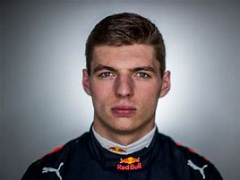
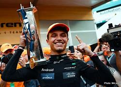
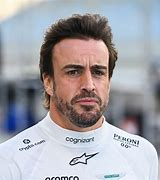
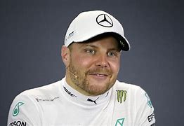
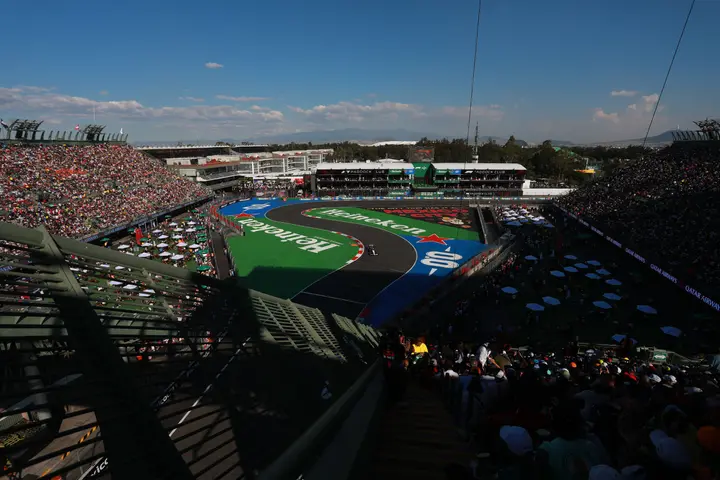
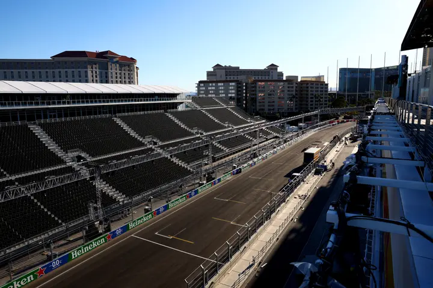
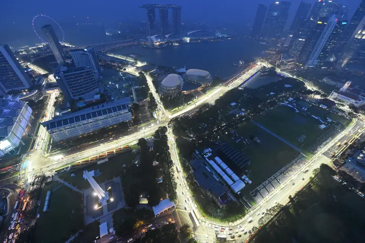

So, whether you’re a die-hard fan or a curious newcomer, buckle up! Formula 1 is a symphony of speed, strategy, and sheer passion. 🏁🔥P.S. If you ever find yourself in a debate about whether F1 is a sport, just remember: it’s where science meets adrenaline, and that’s a winning combo! 😉✨
Popular drivers In Formula 1
1. LEWIS HAMILTION (MERCEDES BENZ)

Sir Lewis Carl Davidson Hamilton is a British racing driver competing in Formula One, driving for Mercedes. ...
2. MAX VERSTAPPEN(REDBULL)
Max Emilian Verstappen is a Belgian and Dutch racing driver competing in Formula One under the Dutch flag for Red Bull Racing. ...
3. LANDO NORRIS(McLAREN)
Lando Norris is a British and Belgian racing driver currently competing in Formula One with McLaren, racing under the British flag. ...
4. FERNANDO ALONSO (ASTON MARTIN)
Fernando Alonso Díaz is a Spanish racing driver currently competing for Aston Martin in Formula One. ...
5. VALTTERI BOTTAS (SAUBER)
Valtteri Viktor Bottas is a Finnish racing driver currently competing in Formula One for Stake F1 Team Kick Sauber, having previously driven for Mercedes from 2017 to 2021 and Williams from 2013 to 2016. Bottas has scored 10 race wins and 67 podiums. He contributed to five Constructors' Championship wins for Mercedes, and has been Drivers' Championship runner-up twice, in 2019 and 2020.Bottas won 10 races for Mercedes, had 20 pole positions, and stood on the podium in a silver arrows race suit an impressive 58 times.Bottas finished in eighth place for a second consecutive race, marking the first time a polesitter has finished eighth since Sebastian Vettel did so at the 2018 Chinese Grand Prix.Bottas built into his role at Mercedes, with the Finn having always seemingly ended up as the number two driver, after never having the consistency to fight for the title.
Some Popular Race Tracks in F1
-
Autodromo Hermanos Rodriguez (Mexican Grand Prix) Track length: 4.304 km

Named after the famous racing brothers Ricardo and Pedro Rodriguez, this circuit is known for its high altitude, which significantly affects car aerodynamics and engine performance. The track combines long straights with a stadium section, creating a unique atmosphere. The thin air at this elevation also challenges the drivers’ stamina and the cars’ cooling systems.
-
Las Vegas Street Circuit (Las Vegas Grand Prix) Track length: 6.25 km

The Las Vegas Street Circuit marks F1’s grand return to Sin City, promising a spectacular night race down the iconic Las Vegas Strip. The speedway features long straights and sharp corners, providing a high-speed urban challenge. Its Saturday night schedule and backdrop of glittering casinos set the stage for one of the most anticipated events in F1 history.
-
Monza (Italian Grand Prix) Track length: 5.793 km

The Temple of Speed, as it’s affectionately known, is one of the fastest circuits in F1, with long straights and famous corners like Parabolica. Monza’s rich history is palpable, being a staple on the F1 calendar since the sport’s inception. The passionate fans in the country, the ‘Tifosi’, create an electrifying atmosphere, especially for the home team, Ferrari.
Visit my homepage at John's Blog